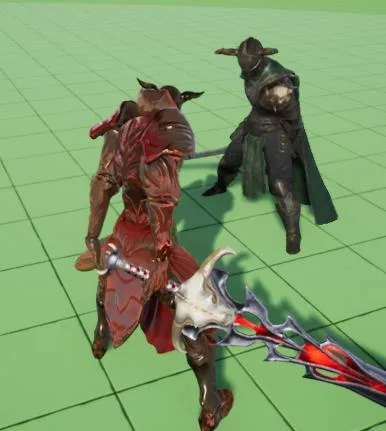

플레이어가 무기를 들면 적도 같이 들던 문제
- 증상
- 플레이어가 무기를 장착하면 같은 무기를 쓰는 적 AI도 함께 장착 동작을 했습니다.
- 원인
- Data Asset 안에서 만든 공격·스킬·장착 객체를 모든 캐릭터가 공유하고 있었습니다. 캐릭터마다 객체 주소가 같은 것을 확인했습니다.
- 해결
- Weapon Data 클래스를 따로 두고 팩토리처럼 캐릭터마다 객체를 새로 만들게 했습니다. Data Asset은 설정값만 들고, 실행 객체는 Weapon Data가 소유합니다.
- 결과
- 같은 Data Asset을 써도 캐릭터별로 상태가 분리됩니다.
